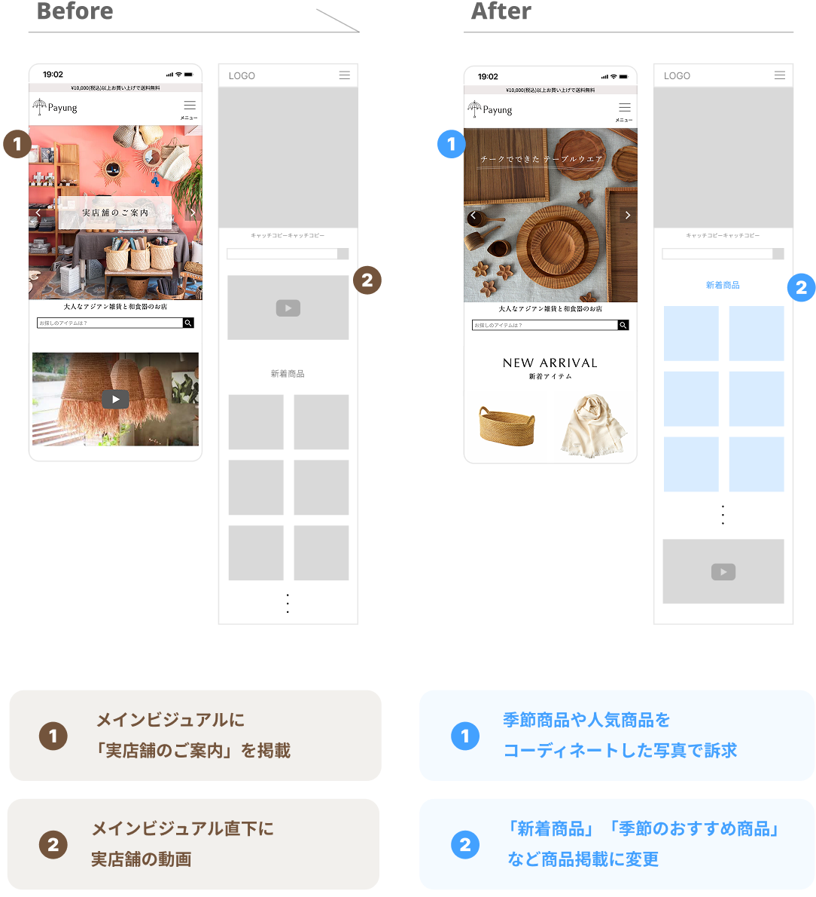

前職制作まとめ
EC企業のデザイナー兼エンジニアとして
サイト運営や改善、特集や商品ページの
作成などを担当していました。
Overview概要
-
●︎︎ 業界：インテリア
●︎ 仕様言語：HTML,CSS,WordPress
●︎ ツール：
Potoshop,illustrator,Dreamweaver
● 出店モール：
楽天市場、Amazon、Yahoo!ショッピング
自社サイト（WordPress）など -
● 担当業務：
・新商品ページデザイン/コーディング
・ストア設計
・特集やフライヤー等の販促施策
・競合他社の分析
・リニューアルプロジェクトの管理と進行
・新人マネージメント
・クオリティチェック
・バナー作成
-
● 体制：
・デザイナー 5名程度
・エンジニア 10名程度
・マーケター 2名
・企画 8名程度
・カメラマン 5名
・ほか 50名程度
インテリア雑貨や家具を扱うEC企業、アールケイプラニング株式会社にて正社員として勤務。自社ECサイトおよび複数のECモールにて、「アジア工房」「ELEMENTS」「Payung」の3つのストアを展開しており、デザイナーは主にアジア工房・ELEMENTSの商品出品を担当していました。
私はそれらに加えて、3ストアの中で最も新しく立ち上げられた「Payung」の主任デザイナーも兼任。ストア全体の世界観設計やビジュアルのディレクションなども行いながら、デザイン業務全般を担っていました。
{kind=link}
Works制作物
01. ストア設計と改善
アジアンテイストの雑貨を取り扱う新設ECストア「Payung」にて、主任デザイナーとしてWebデザイン全般を担当しました。Payungは主に50〜60代の女性ユーザーが多く、年齢層の高い方でも快適に使えるよう、文字サイズやボタンに配慮したUI設計を心がけています。
また、実店舗の店長・販売スタッフ・販売分析担当・社長と定期的にミーティングを実施し、売上や認知度向上に向けた改善も行いました。サイト内の導線設計や特集ページの作成、販促用フライヤーのデザイン制作など、オンラインとオフラインをつなぐ多面的な施策に取り組みました。
ファーストビュー改善と効果
当初、Payungのトップページでは実店舗の訴求がファーストビューのカルーセル1枚目に設置されていましたが、季節性や人気商品をピックアップしたファーストビューに変更し、より訴求力の高い導線を追加しました。さらに、その下に実店舗で撮影された動画が配置されていましたが、これを新着商品のピックアップに変更。
これにより、サイトの入り口でユーザーが興味を持ちやすく、商品への関心を引きやすい構成となりました。その結果、トップページでの離脱率を改善し、ユーザーの回遊率向上にも繋がりました。

{kind=link}
特集ページで、商品との接点を増やす
人気商品や季節商品を特集したページを制作することで、特定の商品を目当てに訪れたユーザーに他商品との接触ポイントを提供しました。また、サイト全体のテキスト量を増やすことで、SEOの強化を図りました。季節ごとの特集ページは毎年使い回せる内容にしており、サイト内のバナーを更新するだけで継続的な購買率アップが狙える構成としまています。
この結果、季節ごとのキーワードを通じた自然検索流入が増加し、特集ページからの流入と購入数の向上、さらには同時購買率（まとめ買い）もアップしました。
{kind=link}
ユーザー動向分析と離脱率改善施策
Googleアナリティクスを活用し、ヒートマップを確認しながらユーザーの動向を分析しました。特に、特集ページなどの主要コンテンツの中で離脱の多いポイントを特定し、その内容を見直すことでユーザーの流れを改善したり、ページ下部に関連商品を充実させるなど、離脱率を抑える工夫を行いました。 これにより、コンテンツ内をじっくり見たり、掲載されている商品ページへ移動するユーザーが増え、サイト内の回遊率に貢献しました。
商品説明文の強化
当初、商品詳細ページにはほとんど概要みの掲載で、商品に関する詳しい説明はされていない設計でした。しかし、価格帯が高めのこともあり、ユーザーに安心感を与える詳細な説明文を整備しました。また、クエリ数を増やすことでSEOにも貢献することを狙いとしています。これにより、価格帯の高い商品など中心に、購買率の向上が見られるようになりました。
{kind=link}
02 商品LP作成
新商品のリリースに伴い、LPのデザイン、構成設計、ライティング、コーディング、商品登録まで一貫して担当しました。
さらに、新商品の制作の合間には、既存商品のLPリニューアルも担当。自分が主体となってリニューアル作業や進行管理を行い、新人スタッフへのレクチャーなども担当しました。
{kind=link}
戦略的なページ構成と、効果的なデザインアプローチ
各商品ごとにデザイン設計書を作成し、企画担当・デザイナー・カメラマン・MDディレクター・社長と戦略ミーティングを実施。ターゲット設定や訴求内容を明確にし、それを反映させたページ構成を行いました。
制作にあたっては、楽天市場やAmazonなど他モールへの展開も見据えたデザインレギュレーションに則りつつ、商品の魅力が最大限伝わるデザインを心がけています。また、デザインの効果を測るためにELEMENTSとアジア工房を利用してABテストを実施しながらチューニングをするなど、デザインの改善も行いました。
天然素材の個体差を、魅力に変えるデザイン
多くの商品に天然素材を使用しており、商品ごとに微細な個体差があります。この個体差は、素材の自然な風合いや独自の美しさを表現する重要な要素と捉え、デザインやライティングに反映させました。商品の写真や説明文では、素材本来の「唯一無二の質感」や「自然な風合い」を強調し、個体差をむしろ商品の魅力として打ち出して伝えること心がけました。
03 フライヤー作成
オンラインショップの商品発送時に同梱される、Payungのフライヤーのデザインと入稿作業を担当しました。
実店舗の素朴でナチュラルな雰囲気が伝わるよう、店舗スタッフの方が撮影した写真をメインビジュアルに使用。全体のトーンを揃えるため、Photoshopでの色被りや歪みの補正、トーン調整などを行い、世界観に一貫性を持たせたデザインに仕上げました。

04 バナー作成
特集・ピックアップバナー / Payung
特集ページやピックアップ商品への導線となる、ストア内掲載用バナーを制作しました。
商品の魅力を視覚的に伝えることを意識し、たとえば背景のカップに湯気を合成することでシズル感を演出したり、視線が自然と商品に向かうようなレイアウトにするなど、商品に魅力を感じる構成を心がけています。

カテゴリーバナー / アジア工房（上）・ELEMENTS（下）
アジア工房とELEMENTSのカテゴリー一覧ページへ誘導するバナーを、各ストアのデザインレギュレーションに則って制作しました。
アジア工房では、Payungよりもニュートラルなテイストのインテリア商材を、ELEMENTSではコースタルで男性にも使いやすいアイテムを取り扱っており、それぞれのストアの世界観やターゲット層に合ったデザインを意識。
訪れたユーザーが商品を探しやすく、ストレスなく目的のカテゴリにたどり着けるよう、視認性と導線設計に配慮したバナー制作を行いました。
{kind=link}